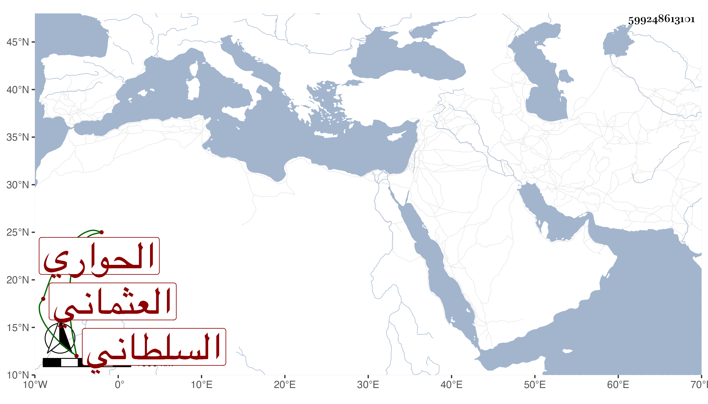

0902Sakhawi.DawLamic.ITO20230111-ara1.EIS1600.599248613101
Biography ID: 599248613101
473
أحمد بن محمد بن أبي القسم الحواري ثم العثماني شاهد المطبخ السلطاني كان محبا في أهل الخير دام في وظيفته من أول دولة الأشرف نحو خمسين سنة . مات في ثالث ربيع الأول سنة أربع عشرة ذكره شيخنا في أنبائه والمقريزي في عقوده وأنه أناف على السبعين . وقال أنه كان من أصحاب أبيه وأنه أخبره عن مفلح العلائي أنه لما نفى الوزير علم الدين عبد الله بن زنبور لقوص حملت له من أستاذي العلاء علي بن فضل الله كاتب السر ألف دينار برسم النواتية فردها . وقال سلم عليه واشكر إحسانه وقل له أنه أخذ معه برسم المشار إليهم ستة وثلاثين ألف دينار ودفع إلى القنا خمسمائة دينار ، فلما رجعت قال لي سيدي همة الصاحب أكبر من هذا ولم يعارضني فيما أعطاه لي .
